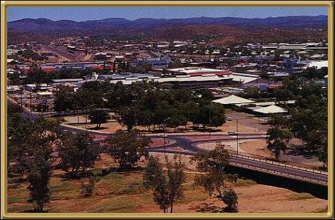

Photographer: Peter Simms
Alice Springs was first settled in 1872 and today is a thriving town. It's an oasis in the heart of our country - almost at the geographic centre! It's an interesting place to live, and a great place for a holiday :) The view here is across the Todd River, which virtually cuts the town in half, which isn't a problem most of the time, but around Easter when the heavy rains come, the river floods and often the water rises high enough to close the bridges across, literally dividing the town! At that time though the river comes alive with all the fish and frogs and other things that hibernate through the dry period. It's really quite amazing!